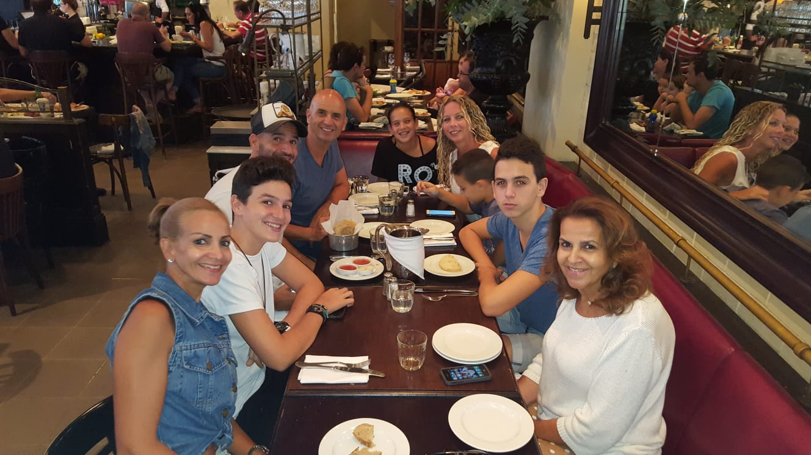
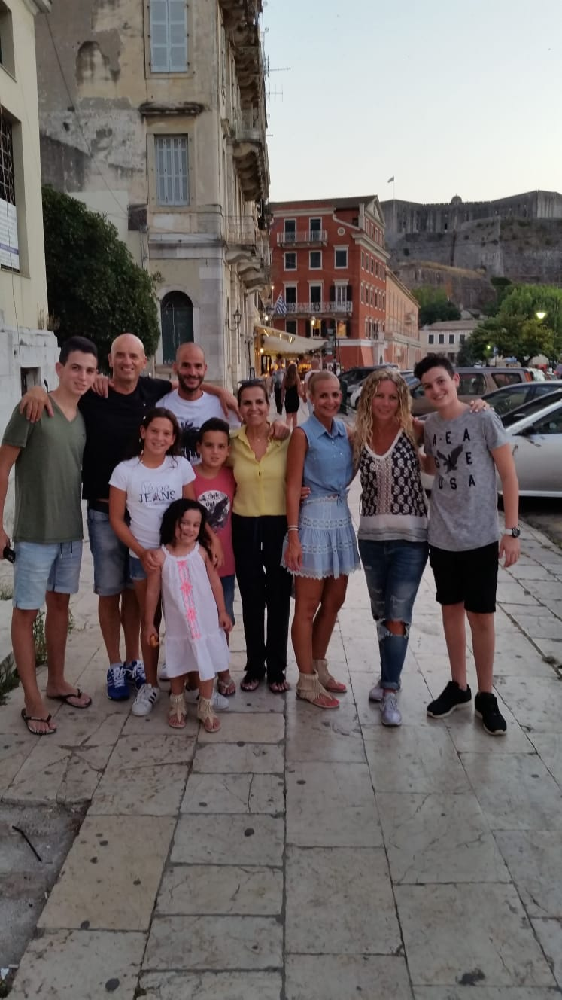
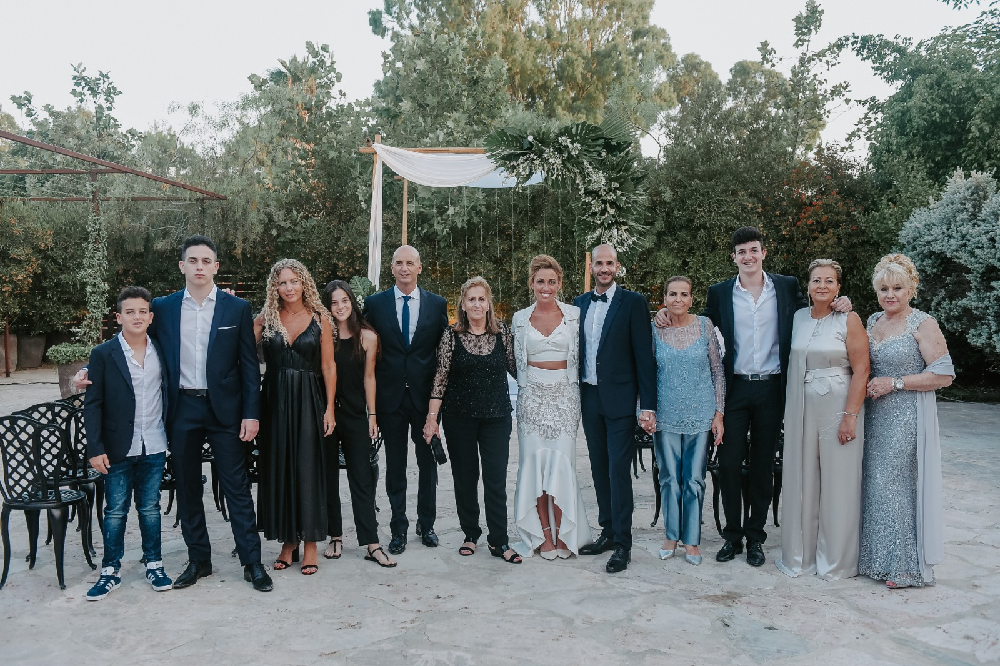

MY PHOTOS





נולדה בעיר פס שבמרוקו,בתאריך 26 בספטמבר 1946 בת למשה ורבקה, האחות הרביעית למשפחה סך הכל שבעה אחרים. את ילדותה העבירה במרוקו בערים פס וקזבלנקה, כאשר הייתה בת 30 בשנת 1976 עלתה לארץ ישראל יחד עם אחותה ואחיה נישאה בגיל 19 לשמעון בן נאים והביאו לעולם שלושה ילדים: אלון, נטלי ואורן כיום גרה ברמת השרון, בעלת מספרה "סלון נטלי", אוהבת לבשל ולהיות עם המשפחה. מנויה לתזמורת הפילהרמונית, חובבת קונצרטים ומוסיקה קלאסית, מומחית בהכנת עוגיות ועוגות. אוהבת לבלות עם הנכדים ותמיד דואגת לשלומם. כל שישי מארחת אצלה בבית את כל המשפחה. אוהבת לשבת עם חברות בבתי קפה, לאכול במסעדות טובות. קוראת ספרים להנאתה, ספר אהוב: הביוגרפיה של אריאל שרון.
Main differnces between WEB1,WEB2,WEB3:
1.
WEB1
בעיקר שימש עבור חברות, לפירסום מידע שאנשים צורכים.
WEB2
אנשים התחילו לפרסם דברים שאנשים אחרים יכולים לצרוך, ישנן פלטפורמות שונות בהן אנשים יכולים לפרסם תוכן שאנשים אחרים יכולים לצרוך לדוגמת יוטיוב וכו'.
WEB3
אנשים בונים אפליקציות אשר לאנשים אחרים יכולה להיות אינטרקציה איתן, חברות בונות פלטפורמות שמאפשרות לאנשים לפרסם שירותים ע"י מינוף הקשר בין אנשים למשל פייסבוק.
2.
WEB1
היה בעיקר תוכן סטטי, דרך אחת לפרסום תוכן ללא השפעה בין הקוראים למפרסמים.
WEB2
ויקפדיות, בלוגים, דרכי תקשורת דרך רשתות חברתיות, המשתמש מייצר תוכן.
WEB3
עדיין אינו מוגדר. בינה מלאכותית ויכולות למידה על מנת לספק לכל משתמש חווית WEB אישית.
3.
WEB1
התבסס בעיקר על קישור מידע.
WEB2
התבסס בעיקר על קישור אנשים.
WEB3
מתבסס בעיקר על קישור ידע.
USE CASE
חיפוש שאילתה לדוגמא "ביבי נתניהו"
WEB1
על מנת למצוא מידע רלוונטי אודות "ביבי נתינהו" על המשתמש להקליד יו-אר-אל ספציפי
WEB2
על מנת למצוא מידע רלוונטי אודות "ביבי נתינהו" על המשתמש להקליד שאילתת חיפוש המכילה מילים ויקבל תוצאות המכילות את המילים
WEB3
על מנת למצוא מידע רלוונטי אודות "ביבי נתינהו" על המשתמש להקליד שאילתת חיפוש המכילה מילים ויקבל תוצאות המכילות את המילים או הקשורות סמנטית למילות החיפוש